这个痛点，是不是你
痛点卡 · 案例编程-06 数据看板 / 运营后台页（编程网页 / CodexAI）
依据：子Agent执行规范.md 第〇节「痛点先行」+ 〇补「痛点提取细则」
出处：案例清单.md编程-06 条目（所属材料 M7 =design-aesthetic-top-30-skills压缩包，第 23 号 skillHTML Anything Dashboard）
素材：M7 技能目录 design-aesthetic-top-30-skills_技能目录.md 第 23 条（本案例无现成成品可对照 —— 与编程-07/09 的"元复刻"不同，这里只有一句能力描述）
一、痛点原句（引用材料原文）
位置1 · M7 第 23 号 skill 的用途描述（逐字）：
「生成数据看板、运营后台和高信息密度业务界面」
（适合：「生成数据看板、运营后台和高信息密度业务界面」；审美备注：「适合可扫描、高信息密度的仪表盘和业务面板」；标签：dashboard, html, data）
位置2 · 案例清单 编程-06 条目给出的痛点（逐字）：
原文「生成数据看板、运营后台和高信息密度业务界面」补全：运营数据散在 Excel，想看"一眼掌握"的看板但不会做前端；用 BI 工具又要买授权、要连库。
位置3 · M4 教程 P07「先判断网站要完成什么目标」（逐字，给出"看板"在六类网站里的定位）：
「长期使用 → Web App → 后台、看板、CRM、SaaS、编辑器，重点是效率」
位置4 · M4 教程 P08「六种常见交互」（逐字，本案例交互项的出处）：
「悬停反馈 / 展开收起 / 标签切换 / 筛选排序 / 加载状态 / 瀑布流。"交互是让用户知道'可以做、做完了、出错了'"」
位置5 · 领域总纲（M5 结束语）：
「作品比简历更快说话。先做出一个能被别人打开的东西。」
「不要在旧赛道卷速度…把"效率"误当成"机会"」
二、痛点主体
- 谁：中小电商/门店的运营负责人（本案例具体化为一个 5 人运营小组的负责人"老周"；一个人要同时看 5 个渠道、5 个品类、40 个在售商品）。
- 场景：每天早会前要报"昨天卖得怎么样"，每周一要报"上周整体怎么样"。数据来源是三个地方：① 平台后台导出的订单 Excel ② 投放后台导出的渠道报表 ③ 客服手工记的退款台账。
- 交付对象：早会上的老板和采购/客服同事（他们只问三句话：总共卖了多少？比上周好还是差？哪个渠道/哪个品在拖后腿？）。
三、旧做法的代价（绑定时长 / 动作量）
| 旧做法 | 具体代价（可核算） |
|---|---|
| 翻 Excel 手工拼 | 每天从 3 个来源导表 → 4 张 Sheet 手工 VLOOKUP 拼一起 → 拉透视表算 5 个渠道 × 5 个品类 → 再画 2 张图贴进日报。一套 40-60 分钟，每周至少重复 6 次（= 每周 4-6 小时） |
| 求人跑 SQL | 想临时加一个口径（"把信息流广告的退款也拆出来看看"）→ 找数据同事排期，等 1-2 天；改个筛选条件要再提一次需求。"改一个指标"的边际成本不为零，所以不敢改、不去看 |
| 买 BI 工具 | 年授权几千到几万；要连库、要建模、要培训；为了"看一眼数字"上一整套数仓，投入产出完全不成立 |
| 找外包做 | 报价几千起、排期 2-3 周；上线后"把这个指标的口径改一下"要再付钱；改完还要等一版 |
这份代价的关键不在"花时间"，在"所以不去看"：因为每次看都要先花 40 分钟，所以真实行为退化成"凭印象开会"——等到月底盘账才发现某个渠道的退款率已经连续三周在涨。
四、想要的目标（做到什么程度算"解决好"）
- 打开就是答案：双击一个文件，第一眼就是本期净销售额（hero 数字）+ 4-6 个关键 KPI，并直接标出"比上期好还是差、差多少"。
- 看得见趋势：一张 30 天走势图，本期与上期叠在一起看（"是这周不行，还是整整两周都在掉"）。
- 看得出结构：渠道对比条（哪个渠道在涨、哪个在拖）+ 品类占比条（钱主要从哪来）。
- 下钻得到明细：一张可以去重、可排序、可筛选的明细表（哪个 SKU 在掉、掉多少）。
- 改口径不求人：时间范围（近 7/14/30 天）点一下就重算全页，不产生任何"排期/付费"动作。
- 手机能看：早会前在手机上点开也不横滚、不挤成一团。
一句话：把"要花 40 分钟准备才能看一眼"变成"打开就是一眼"。
五、【补全】
【补全】材料只给了能力描述（"生成数据看板、运营后台和高信息密度业务界面"），没讲透"为什么值得解决"，这里补三句：
- 看板的真正竞品不是"别的看板"，是"Excel + 印象"。 所以它的成败标准不是"图表好看"，而是"你会不会每天都真的打开它"——会打开，才算把痛点解决了；不打开，做得多漂亮都没用。本案例把"打开就能看到答案"放在第一条验收点，就是为了对齐这件事。
- "高信息密度"和"手机可读"是一对真实矛盾，必须正面解决而不是回避。 材料把"高信息密度业务界面"当成卖点，但密度一上来，小屏第一件事就是横向溢出。运营的真实场景恰恰是"早会前在手机上瞄一眼"，所以本案例把"390px 不横滚"列成红线，并且判据不能靠
overflow-x:hidden掩盖（本项目在案例 09 已踩过这个判据陷阱）。 - "改个指标要再付钱"的本质是：看板的每一次迭代都被计价了。 外包/BI 的计价模型决定了"你不敢改"，而"不敢改"会让看板很快与业务口径脱节、被弃用。单文件 HTML 把这个边际成本打到 0——改一个口径就是把代码里那一行改掉、刷新。所以"免部署、免授权、改得起"不是技术吹点，是它能不能活过三个月的决定因素。
六、价值归类
✅ 目标导向：用户要的是"一眼掌握、并且能自己改口径"（结果导向）→ 所以做的是 KPI 大数字 + 趋势 + 渠道/品类结构 + 可排序明细，而不是"把 Excel 搬到网页上更好看"。 ❌ 非"工具理性"：本案例的工具理性陷阱非常具体——去纠结"要不要上 Superset / Metabase / Grafana""要不要连数据库""用什么可视化库"。真正该先回答的是："我要在 5 秒内看到哪 6 个数字？谁在拖后腿？"——先定问题，再定图表（这也是 dataviz skill 的第一条纪律：先选形态，最后才选颜色）。
七、跨章线索
- 回扣第01章总纲（问答式 AI vs 能执行干活的 AI）：这里 AI 不是陪你讨论"看板该放哪些指标"，而是把 40 个 SKU × 60 天的演示数据、3 张图和一张可排序明细表真的做出来。
- 呼应 M4 P07「Web App = 后台、看板…重点是效率」：本案例是那张判断表里"长期使用"一类的具体落地——效率 = 从 40 分钟到 5 秒。
- 呼应 M4 P08 六种交互：本案例实到 筛选排序（表格排序 + 品类/渠道筛选 + 时间范围）/ 悬停反馈（图表 tooltip + 十字准线）/ 标签切换（品类 chip、时间范围预设）/ 加载状态（空状态与"无数据"提示） 四类。
- 呼应编程-12 交付自检（M4 P15 六条）：
任务卡.md的验收点就是那六条在看板这个具体形态上的落地（内容真实 / 手机可读 / 交互完整 / 风格统一 / 授权清楚 / 能打开）。
AI 是怎么解决的
产物 · 可直接交互
在框内直接交互，或点"新窗口打开"占满浏览器体验完整版。
质检图
构建自核验截图，点击查看原图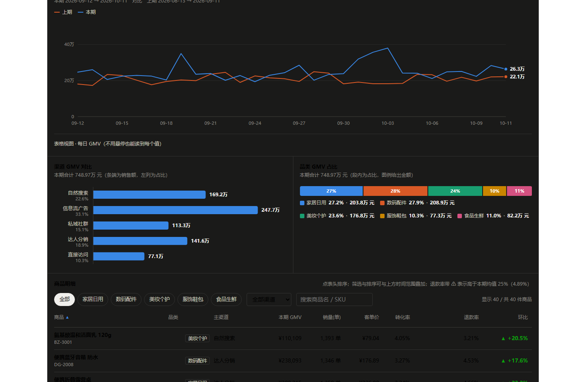
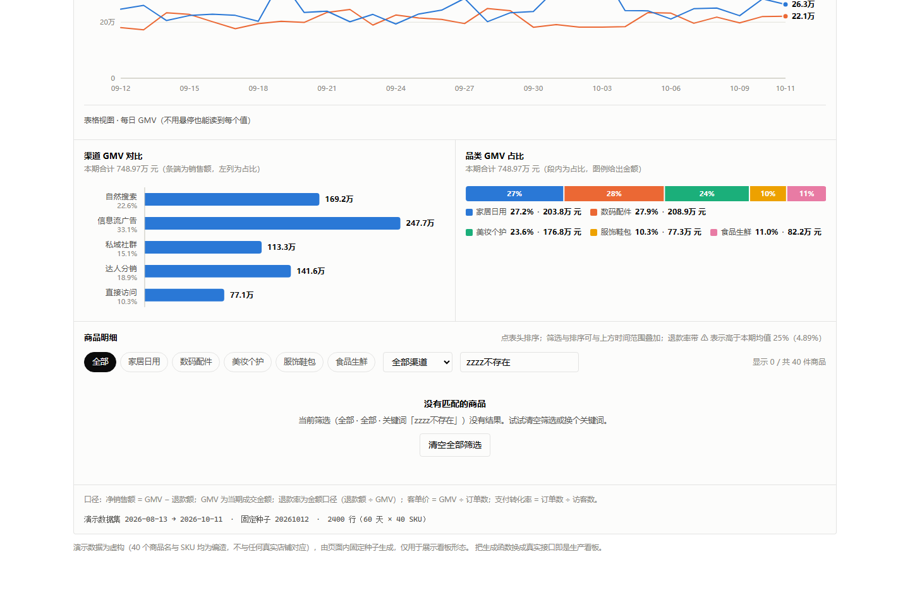
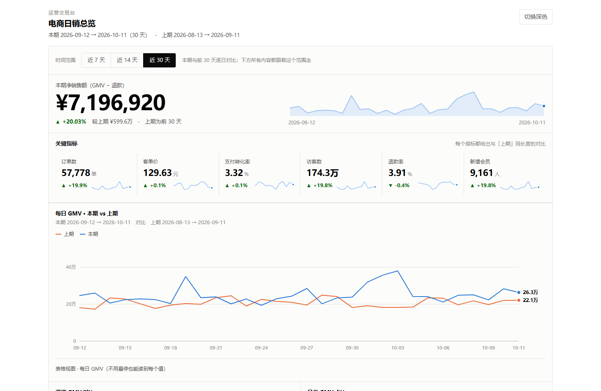
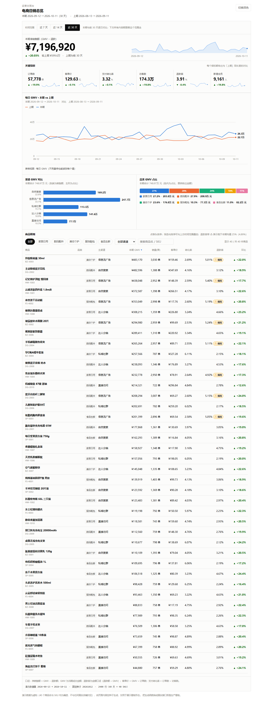
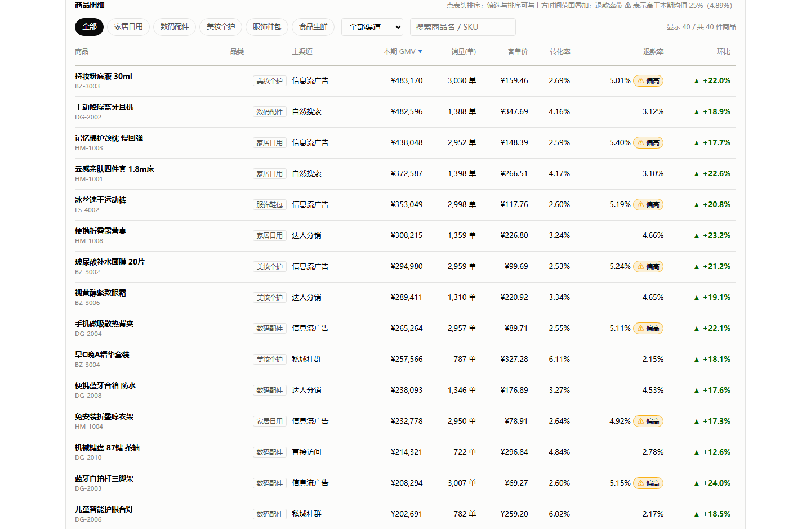
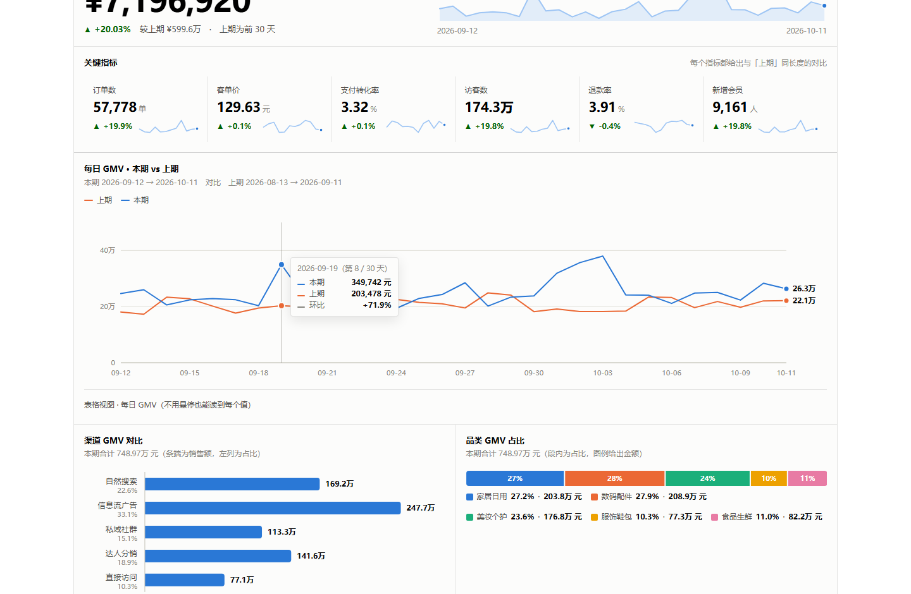
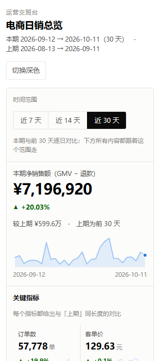
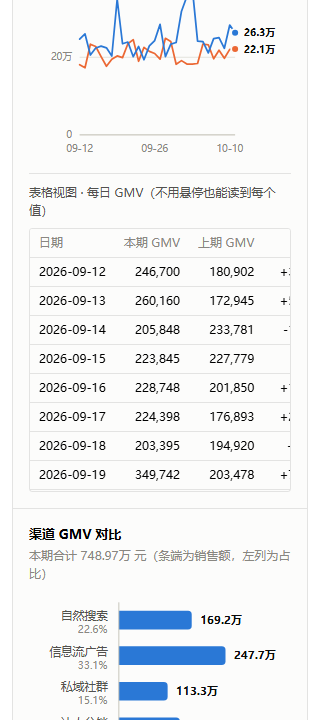
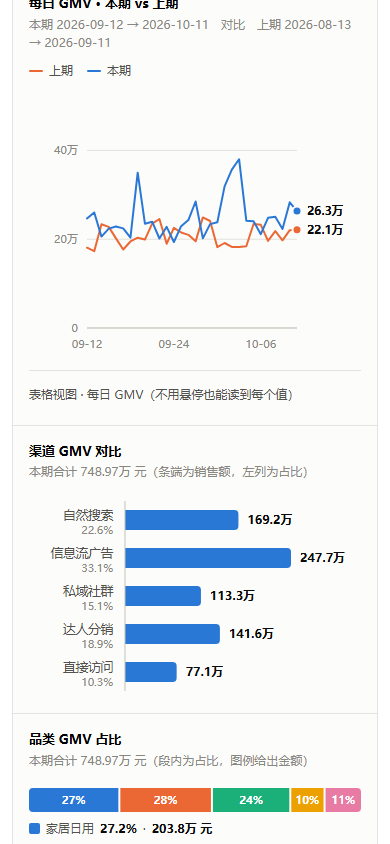
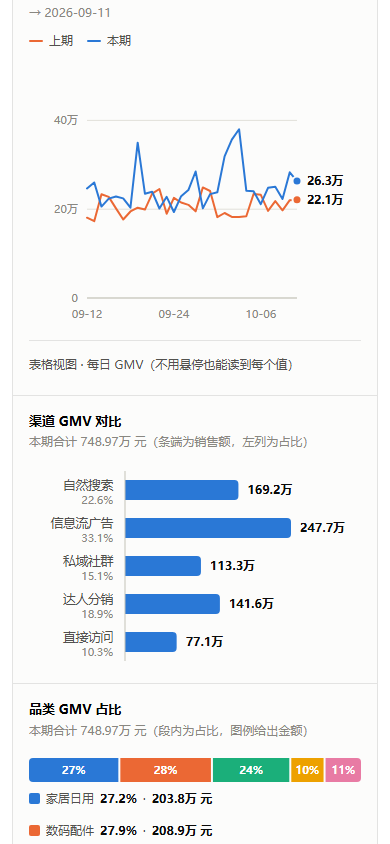
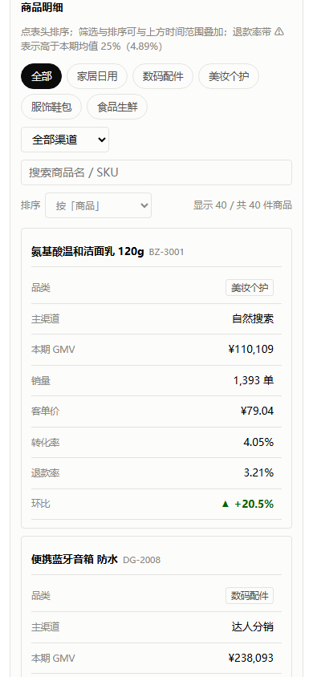